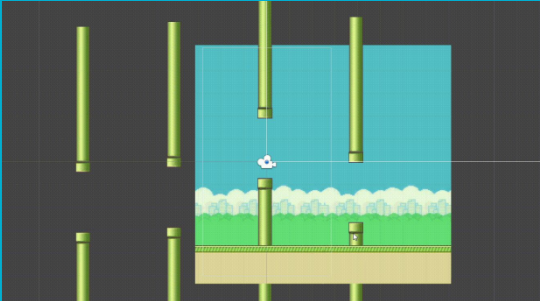

Design Patterns in Practice
01 Dec 2022UI frameworks make web development so much easier.
My Life Could Have Been So Much Easier
 Despite my 4+ years of experience dealing with college assignments and problems, it never ceases to amaze me how many times I spent way much time trying to solve a problem that could have been solved rather quickly or even avoided completely. After about an hour or so trying to solve such a simple problem, I feel like doing something like the gif on the left. All of these troubles and pains could have been avoided if I had utilized a design pattern, which are typical solutions to common problems. Design patterns helps prevent subtle issues early in the development stage so that they do not become a much larger problem later. Patterns are often confused with algorithms, which gives precise steps to achieve an objective, while patterns are more like a blueprint, where you can only see the end result and what some of its components are, but are without steps, as its implementation is up to you to decide.
Despite my 4+ years of experience dealing with college assignments and problems, it never ceases to amaze me how many times I spent way much time trying to solve a problem that could have been solved rather quickly or even avoided completely. After about an hour or so trying to solve such a simple problem, I feel like doing something like the gif on the left. All of these troubles and pains could have been avoided if I had utilized a design pattern, which are typical solutions to common problems. Design patterns helps prevent subtle issues early in the development stage so that they do not become a much larger problem later. Patterns are often confused with algorithms, which gives precise steps to achieve an objective, while patterns are more like a blueprint, where you can only see the end result and what some of its components are, but are without steps, as its implementation is up to you to decide.
Different Design Patterns
The concept of patterns was first described by Christopher Alexander in his book “A Pattern Language: Towns, Buildings, Construction.”, describing patterns as a “language” for designing an urban environment. This concept was picked up by Erich Gamma, John Vlissides, Ralph Johnson, and Richard Helm, who then published a book in 1994 called “Design Patterns: Elements of Reusable Object-Oriented Software”, where the concept of patterns was applied to software engineering. Currently, design patterns are classified into three main types: Creational, Structural, and Behavioral.
Creational design patterns are design patterns that deal with object instantiation, specifically trying to create objects that are suitable for the current system. Creational design patterns control object creation by utilizing the following components: Abstract Factory, Builder, Factory Method, Object Pool, Prototype, and Singleton.
Structural design patterns ease the design of systems by identifying a simple way to instantiate relationships between entities, and utilizes the following components: Adapter, Bridge, Composite, Decorator, Facade, Flyweight, Private Class Data, and a Proxy.
The last main type of design pattern is the behavioral design pattern. Behavioral design patterns identify communication patterns between objects to increase flexibility in their communications. The table below shows all of the components and their function for the three design types.
| Creational Design Patterns | Description |
|---|---|
| Abstract Factory | Creates an instance of several families of classes |
| Builder | Separates object construction from its representation |
| Factory Method | Creates an instance of several derived classes |
| Object Pool | Avoid expensive acquisition and release of resources by recycling objects that are no longer in use |
| Prototype | A fully intialized instance to be copied or clones |
| Singleton | A class of which only a single instance can exist |
| Structural Design Patterns | |
| Adapter | Math interfaces of different classes |
| Bridge | Separates an object's interface from its implementation |
| Composite | A tree structure of simple and composite objects |
| Decorator | Add responsibilities to objects dynamically |
| Facade | A single class that represents an entire subsystem |
| Flyweight | A fine-grained instance used for efficient sharing |
| Private Class Data | Restricts accessor/mutator acces |
| Proxy | An object representing another object |
| Behavioral Design Patterns | |
| Chain of Responsibility | A way of passing a request between a chain of objects |
| Command | Encapsulate a command request as an object |
| Interpreter | A way to include language elements in a program |
| Iterator | Sequentially access the elements of a collection |
| Mediator | Defines simplified communcation between classes |
| Memento | Capture and restore an object's internal state |
| Null Object | Designed to act as a default value of an object |
| Observer | A way of notifying change to a number of classes |
| State | Alter an object's behavior when is state changes |
| Strategy | Encapsulates an algorithm inside a class |
| Template Method | Defer the exact steps of an algorithm to a subclass |
| Visitor | Defines a new operation to a class without a change |
Patterns in Practice
 I first started looking into the different types of design patterns, I thought I did not utilize any of them before. However, after reading more into what design patterns are, I realized that I have used design patterns, specifically creational design patterns. In my Computational Media Systems class, I remember trying to replicate the game ‘Flappy Bird’ while adding a few extra functionalities. Since the game was basically endless, I needed to find a way to create an infinite number of pipes, if needed. Instead, I was able to use the object pool method to recycle these pipes instead of creating and then destroying them by moving the pipes back to the front of the queue once they have gone behind the player. I also utilized the singleton instance in my game ‘Flappy Bird 2.’ There were other instances in that class where I had to create infinitely spawning enemies or instantiate bullets and utilized creational design patterns. Over the course of ICS 314, I was also introduced to several components of the Behavioral design patterns such as chain of responsibility, iterator, and observer. However, I have yet to utilize structural design patterns.
Using Patterns to Predict the Future
While I have not utilized many of the design patterns mentioned above, if patterns suggest anything, its that I will probably utilize it sometime in the future without knowing it. Who knows, maybe more design patters will emerge that will solve more problems within software engineering and allow us to create even more powerful and complex systems.